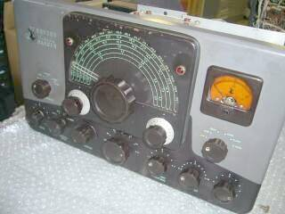 |
見事に左右対称でデザインされています
ＶＦＯエスカッションにあるＰＬも、片側はダミーです |
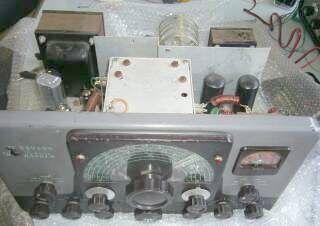 |
フロントやや上から
黒い２本の真空管は、変調ファイナル １６１４プッシュプル ６Ｌ６ＧＣのメタル管です |
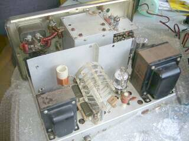 |
斜め後ろから
左奥が変調部
右奥は、発振／励振部と電源部です
左に見えるが電源チョートランス
右に見えるのは電源トランスです
変調トランスは、メーターの手前に配されています
ファイナルは、ご覧のように６１４６シングルです |
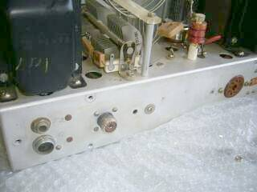 |
リアに準備されたコネクタ
■ＡＮＴ：Ｍ型レセプタクル
■ＣＷ：電鍵 φ６ これらは一般的
■ＡＭ：マイクロホン
ＨｅａｔｈＫｉｔ等と同じ形状のコネクタ（アンフェノール ８０－Ｍシリーズの２Ｐ）が採用されています
入手しづらいので、最終的には一般的なＭＩＣ４Ｐあたりに交換しようと思います
■９Ｐオクタルソケット
プラグの付属があってやれやれ・・・９Ｐは滅多と目にしません（８ＰはＵＳ／ＧＴプラグとして一般的） |
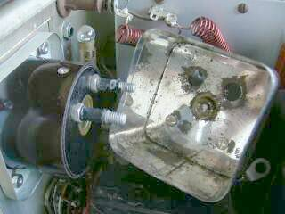 |
使用上の問題は無さそうだったのですが、メータフロントガラスが外れていましたので何とか修理をと言うことで、メーターの分解をスタートしました
メーターは、きちんとシールドしてあります
このため、分解作業は手がかかります
奥に見えるランプは、電源ＰＬで、メーターのバックライトはシールドケースの真ん中に見えています
ＲＦＣ・・・この写真にも写っている空芯のものですが、本機では多用してあります
ＲＦの回り込みについては、かなり対策が取られています
さすがに１Ｋｗ送信機のエキサイタです |
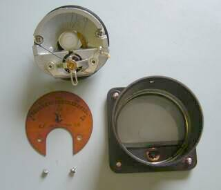 |
取り外したメータを分解
フロントガラスは、瞬間接着剤で固定しました
良くできた構造で、フロントガラスが外れても、メータの針には直接触れないような構造が取られています
ついでにメーターフェイスの清掃を行いました |
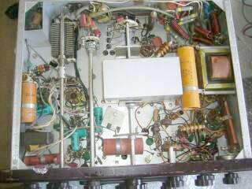 |
シャーシ下部です
アルミシャーシ採用のため、時間が経過しても非常に綺麗です
真ん中に通っているシャフトは、バンド切替ＳＷ
右に見えるトランスは、チョークトランスです
左奥に見えるタイトＶＣは、πマッチロード側のＶＣで、小容量ですが、その右に見えるＳＷで、並列に接続される固定コンデンサを切り替えて、必要な容量を確保します
コンデンサは交換しなくてはいけないかも知れません（経年変化の一番は、ペーパー／電解コンデンサというのが常識）
|
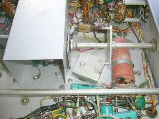 |
興味深い構造Ⅰ
バンド切替に連動したＶＦＯの切替機構に注目下さい
ＧＡＬＡＸＹ ＧＴ-５５０ では、金属ベルトを使っていましたが（こちらは１対１の対応）、本機ではカムのような構造で、回転の方向を９０°変化させています
その回転は、１対１ではなく、７バンド（７段階）に対して３段階のＶＦＯ切替と、単純ではありません
それを爪を２本立てたカムのような機構で実現させています
ＶＦＯそのものの設計と、このメカの工夫というのが、コロンブスの卵状態・・・最初に思いついた人は偉い！いえ素晴らしい！ |
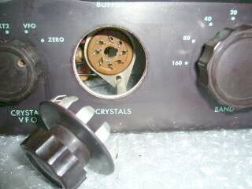 |
興味深い構造Ⅱ
水晶発振子のソケットは、このようにツマミ風のカバーで隠されています
左右対称のこだわりが大きいようです |
| 本格的に再生に向けて取り組みを開始、まずはメカから |
まず目に付くところ・・・ＶＦＯダイヤルの指針がきちんと１８０°展開されません
カーソルが、少しずれて取り付いています
まずは、この修正からスタート、ついでに減速メカにシリコングリスを塗布しました
そして、次はいよいよ、ＶＦＯそのものへ・・・・ |
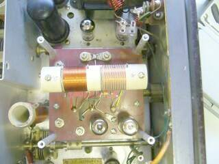 |
ＶＦＯの上部の蓋を開けてビックリ
発振コイルを止めているビス２本がが止まっていません
このビスでＶＣも固定されるようになっています
もしかしてナットが下に落ちているかも・・・ということで本格的な分解をせざるを得なくなりました
答えは、何もなく・・・そうは言っても固定しないわけにもいかず、とりあえず分解したナット･ワッシャ ２組を、こちらに使い回ししました
作業性の悪いこと悪いこと、この取付には苦心しました！
ＶＦＯの上部に見えているのは、変調段です |
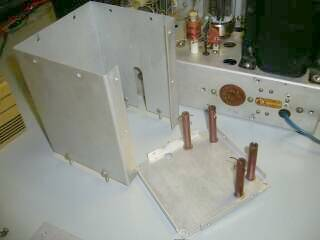 |
ＶＦＯの分解・・・なんとかシールドケースを外すことが出来ました
ベーク棒が立っているものが上蓋です（ひっくり返した状態）
このベーク棒・・・各バンドの補正用ＶＣの延長シャフトです
このものを使うことで、金属製のドライバで問題なく調整が出来ることになります（これだけ離すと、金属の影響／浮遊容量も関係無いでしょう）
よく考えられています
※「フロントやや上から」の写真参照
ひとつ欠品・・・ここは、１１ｍバンドです |
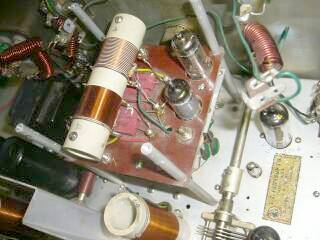 |
ＶＦＯは、中空に３～４ｍｍほどの厚さのベークライト板に発振コイルやＶＣが取り付けられています
そして少し沈めた形で真空管が組み込まれています
シールドケースをかけると、この２本の真空管は外からは見えません
真空管は、
発振用 ６ＡＵ６
定電圧放電管 ＯＡ２／ＶＲ１５０ＭＴ
の２本 |
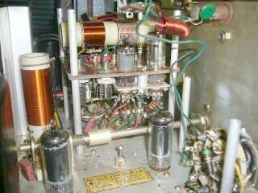 |
ＶＦＯを横から見ると・・・
バンド切替ＳＷが縦方向に用意されています
何とも器用な機構で、回転方向を９０°ひねってあります
手前の真空管は、バッファ（水晶発振）／ドライブの６ＣＬ６ ２本です
縦に立って見えるコイルは、ドライブ段の同調コイルです
左のシールド板の奥（左手）は、ファイナル部です |
この時代の送信機（エキサイタ）では当たり前のように、アンテナの切替リレーの内蔵はありません
アンテナ切替は、リニア・アンプの持つ機能です
が、はやりそういった使い方だけではないのでしょう、本機にはアンテナ切替リレーが追加（改造？）されていました
さて、ここでの疑問・・・送信（ＰＴＴ）操作はどうするのだろう？
マニュアルにはＰＴＴ改造方法が書かれていますが、現物を見るとＡＣ一次側にリレーコイルの片側が接続されています（マニュアルに記載のある方法ではありません）
しかし、その説明ですが、マイク・ＰＴＴ端子に１００Ｖ以上の直流電圧がかかる内容です
今の時代では考えられないと思います・・・触ればいくらか電圧降下するとは言え、どこかの電気柵くらいの電撃を受けそうです
その他、ＶＦＯシールド内の温度上昇対策（ブリーダー抵抗の取付位置の変更）や、キークリック対策（コンデンサの容量変更、あるいは取付位置変更）など、書かれています
このあたりの情報開示については、見習う点があるように思います
火入れ式の前までに、しておかないといけないことが多くありそうです（当分、遊ばせてもらえそう） |
電解コンデンサなどは、見るからに劣化しています
真空管の調子は、今時点では分かりません（予備球の用意に走っています！）
メカ／部品のチェック・交換、配線チェックを終えると、いよいよ火入れ式です |
|
現役に至るには、それなりな取り組みが必要そうです
これらＡＭギアについては、いつかは現役・・・を合い言葉？に、時間を見つけてボツボツ取り組むつもりです
面白いネタが見つかれば、改めてご紹介をさせていただきます |
|
|